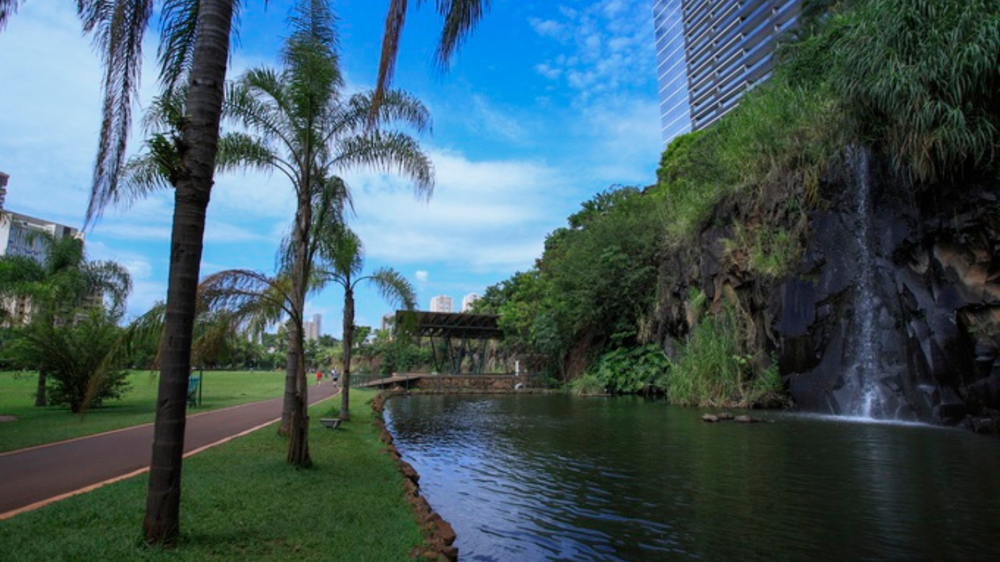
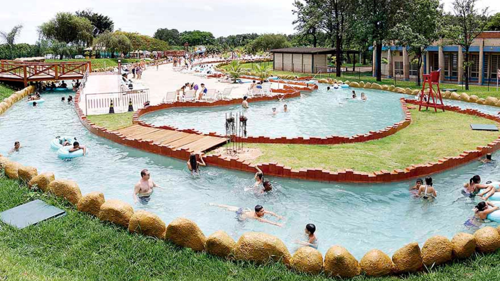
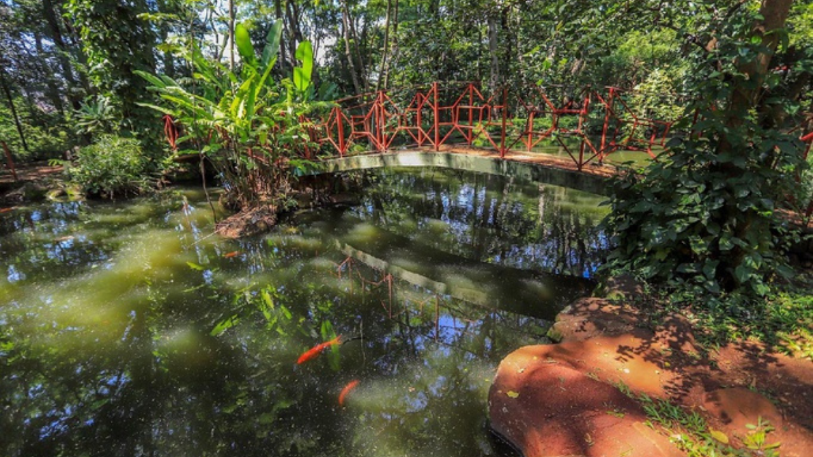
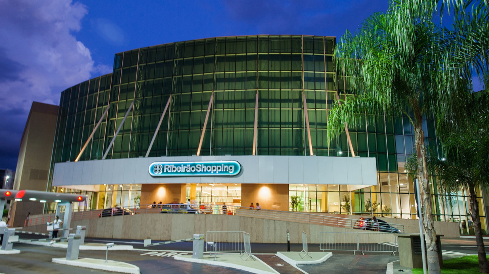
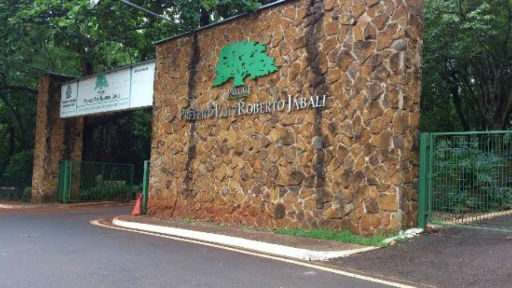
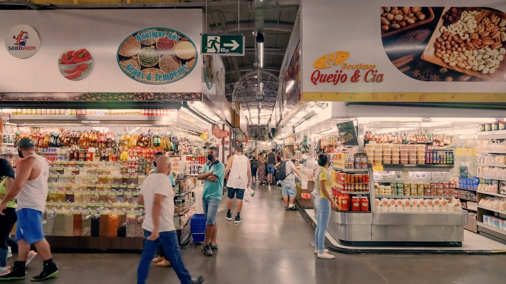
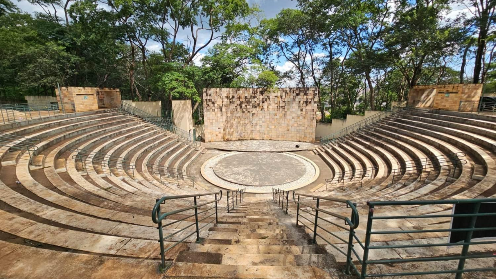
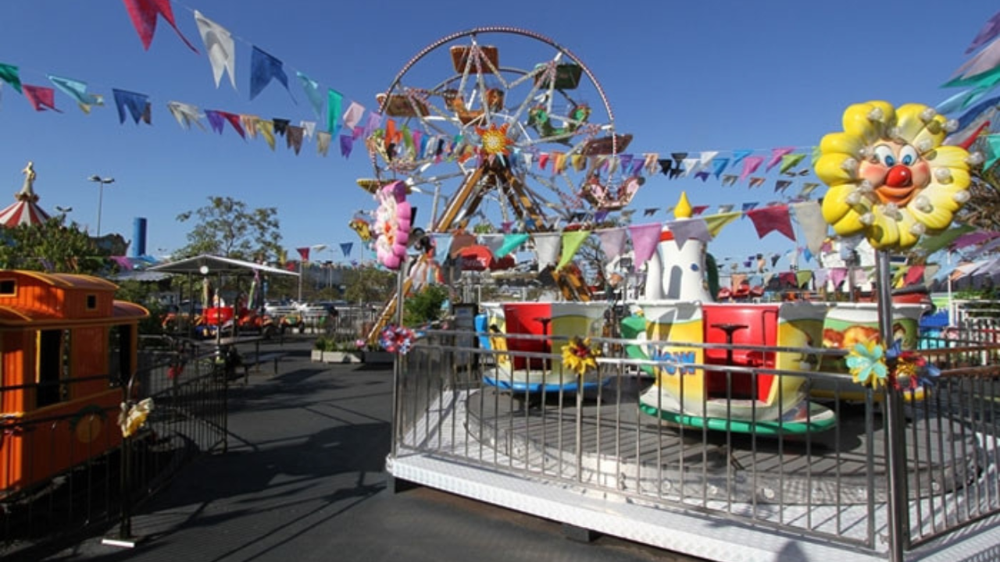

O Teatro Pedro II é um dos principais símbolos culturais de Ribeirão Preto e o terceiro maior teatro de ópera do Brasil. Inaugurado em 1930, destaca-se por sua arquitetura eclética e excelente acústica, sendo palco de espetáculos de música, teatro e dança. Localizado no coração da cidade, integra o Quarteirão Paulista, um importante conjunto arquitetônico e histórico.
📍 Localização: Rua Álvares Cabral, 370 – Centro, Ribeirão Preto – SP
O Magic Gardens é um clube-parque localizado em Ribeirão Preto, ideal para famílias e amigos que desejam aproveitar piscinas, áreas verdes e eventos especiais em um ambiente agradável e bem estruturado.
📍 Localização: Avenida Jornalista Antônio Carlos Pinho Santana, 2501 – Jardim Orestes Lopes de Camargo, Ribeirão Preto – SP
O Bosque e Zoológico Doutor Fábio Barreto é uma das principais áreas de lazer e educação ambiental de Ribeirão Preto. Localizado no Parque Municipal do Morro de São Bento, o espaço abriga mais de 550 animais de diversas espécies, incluindo aves, mamíferos, répteis e peixes, além de setores como aquário, meliponário e um Jardim Japonês recentemente reaberto ao público.
📍 Localização: Rua Liberdade, s/nº – Campos Elíseos, Ribeirão Preto – SP
O RibeirãoShopping é o maior centro de compras e lazer de Ribeirão Preto. Inaugurado em 1981, o shopping passou por diversas expansões e hoje conta com várias lojas, opções gastronômicas, salas de cinema, centro médico com diversas especialidades e o Multiplan Hall, espaço para eventos e shows. É um dos principais destinos para compras, entretenimento e gastronomia na região.
📍 Localização: Avenida Coronel Fernando Ferreira Leite, 1540 – Jardim Califórnia, Ribeirão Preto – SP
O Parque Prefeito Luiz Roberto Jábali, popularmente conhecido como Parque Curupira, é a maior área de lazer de Ribeirão Preto, com 152 mil metros quadrados de natureza preservada. Inaugurado em 2000, o parque oferece trilhas asfaltadas para caminhadas e ciclismo, lagos e cachoeiras artificiais, áreas para piqueniques, playgrounds e uma praça de eventos. Sua vegetação abriga diversas espécies de aves e pequenos mamíferos, tornando-o um espaço ideal para atividades ao ar livre e contato com a natureza.
📍 Localização: Avenida Costábile Romano, s/nº – Bairro Ribeirânia, Ribeirão Preto – SP
A Catedral Metropolitana de São Sebastião é um dos principais marcos religiosos e arquitetônicos de Ribeirão Preto. Construída entre 1904 e 1918 em estilo neogótico, destaca-se por seus vitrais coloridos, afrescos de Benedito Calixto e altares em mármore de Carrara. Tombada como patrimônio histórico, a catedral é um ponto de referência cultural e espiritual na cidade
⏰ Horários das missas:Consultar no site
O Mercadão Central de Ribeirão Preto é um dos pontos comerciais mais tradicionais da cidade, com mais de um século de história. Inaugurado em 1900 e reconstruído em 1958 após um incêndio, o mercado é tombado como patrimônio histórico e declarado ponto turístico municipal. Com 152 boxes distribuídos em 4.150 m², oferece uma variedade de produtos como queijos, pimentas, geleias, frutas secas, artesanatos, ervas, cafés, além de lanchonetes e restaurantes. O local também abriga uma obra do escultor Bassano Vaccarini em sua fachada.
📍 Localização: Rua São Sebastião, 130 – Centro, Ribeirão Preto – SP
O Teatro de Arena é um dos espaços culturais mais emblemáticos da cidade. Inaugurado em 1969, foi o primeiro teatro de arena construído no interior do estado de São Paulo. Projetado pelo engenheiro Jaime Zeiger, o teatro foi edificado em uma meia-encosta no Morro do São Bento, aproveitando a topografia para favorecer a acústica natural. Após passar por revitalizações, o teatro foi reaberto em 2024, retomando sua importância para eventos culturais na cidade.
📍 Localização: Praça Alto do São Bento, s/nº – Morro do São Bento, Ribeirão Preto – SP
O Park do Gorilão é um parque de diversões localizado no Novo Shopping, em Ribeirão Preto, oferecendo diversão para toda a família. Com atrações como roda-gigante, carrossel, cinema 7D e neve artificial, é uma opção de lazer para todas as idades.
📍 Localização: Av. Presidente Kennedy, 1500 – Ribeirânia, Ribeirão Preto – SP